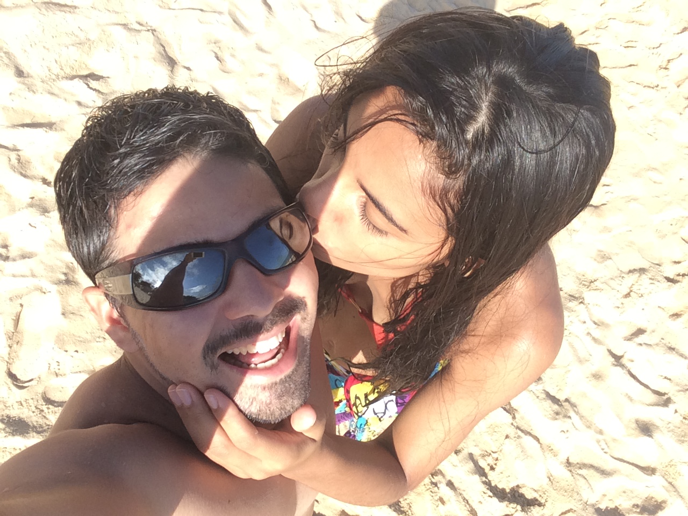
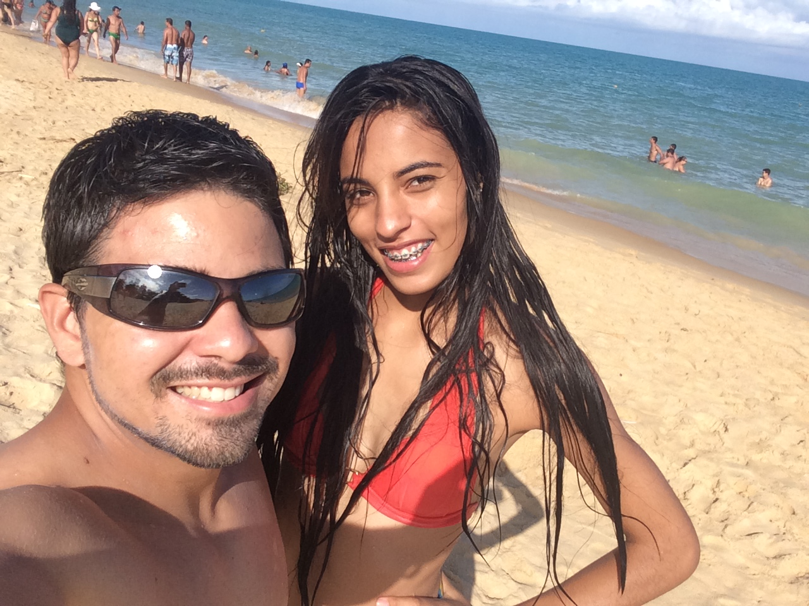
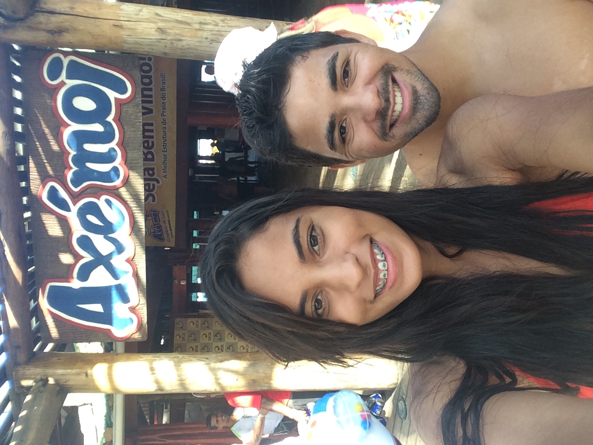
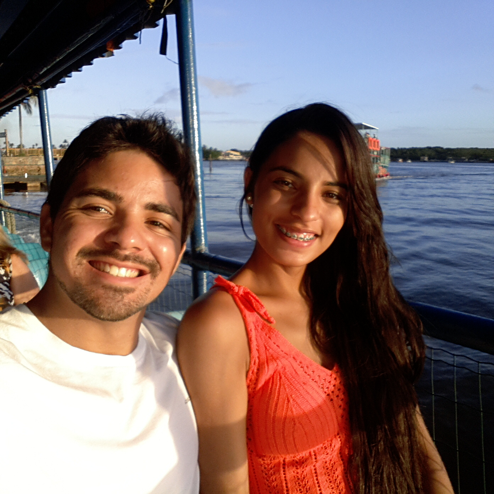

Porto Seguro




Uma de nossas primeiras viagens, tudo em menos de 24h, mas para nossa sorte o tempo foi passando bem devagarinho, aproveitamos um banho de mar, visitamos o Axé Moi, fizemos uma travessia de balsa até o Arraial d'ajuda, passeamos por lá, comemos pizza, e ja entardecendo fizemos a travessia de volta, pegammos a estrada (a copiloto dormiu), e voltamos pra dormir cheio de boas histórias e boas fotos para relembrar dos momentos.